Network Analysis 기초
Table of contents
Network 기본 개념
Node와 Edge
- Network: Node와 Edge로 이루어진 자료 구조.
- Node: vertex라고도 부르며, network를 이루는 각 점을 의미한다. ex) twitter user network를 만든다면, user들이 각각의 node.
- Edge: link, 또는 tie라고도 부르며, 각 node 간의 관계를 의미한다. ex) twitter user network를 만든다면, user(=node)간 follow 관계를 edge로 표현할 수 있다.
Tie(관계)의 종류
-
비대칭 관계(asymmetric tie): 관계에서 두 node가 갖는 특성이 다른 경우.
- 관계에 방향성이 있으므로, directed tie라고도 한다.
- ex) SNS에서의 follower - followee 관계 (A가 B를 follow하면 A → B와 같이 관계의 방향이 존재)
- directed tie로 구성된 네트워크를 directed network라고 함
-
대칭 관계 (symmetric tie): 관계에서 두 node가 갖는 특성이 비슷한 경우
- 관계에 방향성이 없으므로, undirexted tie라고도 한다.
- ex) 특정 집단 내 사람들 간의 친분 관계. (서로 아는 사이인지)
- undirected tie로 구성된 네트워크를 undirected network라고 함
간단한 네트워크 그려보기
- network 분석에 특화된 python library인
networkx를 사용
import networkx as nx # import해야 사용 가능; 보통 nx로 줄여서 import
import matplotlib.pyplot as plt # 시각화를 위해 미리 함께 import
그래프 생성
- 먼저, 비어있는 graph를 생성
# Create an empy undirected graph g = nx.Graph()- directed graph를 그리려면:
nx.DiGraph() - +)
nx.MultiGraph(),nx.MultiDiGraph()옵션도 존재 (multi-edge graph)- 같은 node 2개를 연결하는 edge가 여러 개일 수 있는 그래프.
- ex) 정류장 간 trip을 형상화 → A 정류장에서 B 정류장을 거쳐 가는 route가 3종류면 edge가 3개
- 하지만 multi edge를 그리려면 리소스가 많이 들어서, 보통 그냥 edge 하나로 collapse해주고 ‘weight’ metadata로 edge의 강도를 표현해준다. (Graph나 DiGraph를 그리고, weight를 지정)
+) type 확인: ‘Graph’ type
type(g)networkx.classes.graph.Graph- directed graph의 type은
networkx.classes.digraph.DiGraph
- directed graph를 그리려면:
- node 추가하기
g.add_nodes_from([1,2,3,4,5,6]) # Add nodes from a list- cf) node를 하나씩 추가하려면:
g.add_node(1)이렇게 하나씩 써주면 된다
- cf) node를 하나씩 추가하려면:
- edge 추가하기
g.add_edges_from([(1,3), (2,4), (2,5), (2,6), (3,4), (4,6), (5,6)]) # Add edges from a list- cf) edge를 하나씩 추가하려면:
g.add_edge(1,3)이렇게 하나씩 써주면 된다 - 만약 모든 node가 edge가 연결되어 있다면, edge만 추가해도 그 안에 포함된 node도 자동으로 추가된다
- cf) edge를 하나씩 추가하려면:
Basic Calculations
print(g.nodes()) # nodes
print(g.edges()) # edges
print(g.number_of_nodes()) # number of nodes
print(g.number_of_edges()) # number of edges
[1, 2, 3, 4, 5, 6]
[(1, 3), (2, 4), (2, 5), (2, 6), (3, 4), (4, 6), (5, 6)]
6
7
네트워크 시각화
-
nx.draw_networkx()함수를 이용해 시각화 - draw_networkx는 다른 것과 연결이 많은 노드를 중심에 오게 자동으로 위치를 결정해서 가시화해주며, node의 label도 자동으로 함께 보여준다
-
nx.draw()함수를 사용해도 되지만, draw_networkx가 부가 기능이 더 많음
nx.draw_networkx(g)
plt.axis('off') # turn off axis
plt.show()
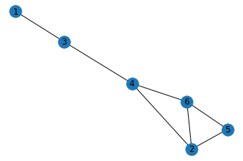
+) graphML 파일로 저장하기
- graphML 파일로 내보낸 후, gephi 등의 툴로 시각화할 수도 있다
nx.write_graphml(g, 'graph_test.graphml')
node, edge에 attribute 더하기
- Add node attributes
g.nodes[1]['gender']='male' # {'gender':'male'}이라는 dictionary의 느낌. key-value pair. g.nodes[2]['gender']='female' g.nodes[3]['gender']='male' g.nodes[4]['gender']='female' g.nodes[5]['gender']='male' g.nodes[6]['gender']='male' print(nx.get_node_attributes(g, 'gender')){1: 'male', 2: 'female', 3: 'male', 4: 'female', 5: 'male', 6: 'male'} - Add edge attributes
g[1][3]['weight'] = 3 ## 이렇게 접근해도 됨: g.edges[1, 3]['weight'] = 3 g[2][4]['weight'] = 1 g[2][5]['weight'] = 4 g[2][6]['weight'] = 3 g[3][4]['weight'] = 2 g[4][6]['weight'] = 3 g[5][6]['weight'] = 4 print(nx.get_edge_attributes(g, 'weight')){(1, 3): 3, (2, 4): 1, (2, 5): 4, (2, 6): 3, (3, 4): 2, (4, 6): 3, (5, 6): 4}- 1-3 사이의 edge를 접근하는 방법:
g[1][3]=g.edges[1, 3](어떻게 접근하든 상관없음)
- 1-3 사이의 edge를 접근하는 방법:
+) 속성까지 포함해서 node, edge 보기
-
data=True옵션을 넣어주면 됨
g.nodes(data=True) ## node들의 속성까지 함께 볼 수 있음
NodeDataView({1: {'gender': 'male'}, 2: {'gender': 'female'}, 3: {'gender': 'male'}, 4: {'gender': 'female'}, 5: {'gender': 'male'}, 6: {'gender': 'male'}})
g.edges(data=True) ## edge들의 속성까지 함께 볼 수 있음
EdgeDataView([(1, 3, {'weight': 3}), (2, 4, {'weight': 1}), (2, 5, {'weight': 4}), (2, 6, {'weight': 3}), (3, 4, {'weight': 2}), (4, 6, {'weight': 3}), (5, 6, {'weight': 4})])
attribute 포함해서 시각화
- edge의 ‘weight’를 포함해서 시각화
pos=nx.spring_layout(g) # 각 node의 position을 정해서 그려줘야 edge_label를 맞춰서 넣을 수 있음 nx.draw_networkx(g, pos) labels = nx.get_edge_attributes(g,'weight') nx.draw_networkx_edge_labels(g, pos, edge_labels=labels) plt.axis('off') # turn off axis plt.show()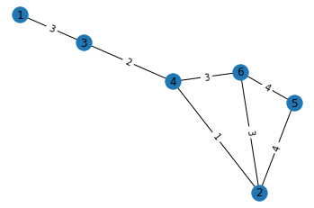
- node의 ‘gender’ attribute에 따라 색 다르게 표현
color_map = [] for n, d in g.nodes(data=True): if d['gender'] == 'female': color_map.append('pink') # 여성: pink else: color_map.append('skyblue') # 남성: skyblue pos=nx.spring_layout(g) nx.draw_networkx(g, pos, node_color=color_map) labels = nx.get_edge_attributes(g,'weight') plt.axis('off') # turn off axis plt.show()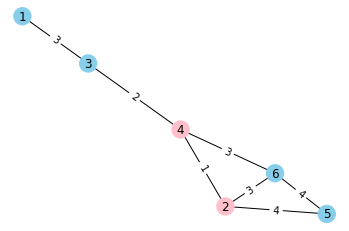
특정 조건의 node, edge 찾기
- ‘gender’가 ‘female’인 node만 찾기
female_nodes = [n for n, d in g.nodes(data=True) if d['gender'] == 'female'] print(female_nodes)[2, 4] - ‘weight’가 3보다 큰 edge만 찾기
strong_edges = [(u, v) for u, v, d in g.edges(data=True) if d['weight'] > 3] print(strong_edges)[(2, 5), (5, 6)]
DiGraph 그리기 & self-loop
diG = nx.DiGraph()
diG.add_edges_from([(1, 2), (2, 4), (4, 2), (3, 3), (1, 3), (5, 1)]) # edge만 추가해도, 자동으로 이에 포함된 node도 함께 추가됨
→ 시각화해보기
nx.draw_networkx(diG)
plt.axis('off') # turn off axis
plt.show()
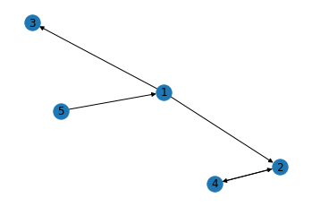
+) self-loop 확인하기
- self-loop: 자기 자신으로 돌아오는 루프 (edge that begin and end on the same node)
- ex) 버스 노선 중, A 플랫폼에서 떠나서 A 플랫폼으로 돌아오는 순환선이 self-loop로 표현될 수 있음.
- 이번 diG에서 추가한 (3, 3) edge가 바로 self-loop
- self-loop는 그래프를 시각화했을 때 잘 눈에 띄지 않기에,
nx.number_of_selfloops()함수로 self-loop의 개수를 파악할 수 있다.
nx.number_of_selfloops(diG) # diG에는 1개의 self-loop가 포함되어 있음
1
Network 구조 파악하기
# 위에서 생성한 g 네트워크를 이어서 사용
nx.draw_networkx(g)
plt.axis('off') # turn off axis
plt.show()
Neighbors & Degree
-
g.neighbors(node): 그래프 g 내에서 특정 node와 연결된 neighbor node들을 파악할 수 있음 -
g.degree(node): 그래프 g 내에서 특정 node의 neighbor 수를 파악할 수 있음. (연결된 node의 수)print(list(g.neighbors(4))) # 4's neighbors print(g.degree(4)) # 4's degree, i.e., number of neighbors[2, 3, 6] 3
Shortest path
-
nx.shortest_path(g, node1, node2)를 활용하면 네트워크 g의 node1에서 node2까지의 shortest path를 찾을 수 있다. - +)
nx.shortest_path(g, node1, node2, weight='weight')라고 하면 edge의 weight을 고려해서 찾아준다
nx.shortest_path(g, 3, 5)
[3, 4, 2, 5]
+) 그냥 nx.shortest_path(g)라고만 하면 g의 모든 node 간의 shortest path를 모두 찾아준다
Centrality
: node의 중요성을 판별할 때 활용.
-
Degree Centrality: tie가 얼마나 많은지의 정도
- 특정 node의 neighbor 수 / 최대로 가질 수 있는 neighbor 수 = degree / (n-1)
- 최대로 가질 수 있는 neighbor 수는 n-1. (self-loop 고려X)
# 각 node별 degree centrality 값을 dictionary 형태로 보여줌 nx.degree_centrality(g) # key: node, value: degree centrality score for that node{1: 0.2, 2: 0.6000000000000001, 3: 0.4, 4: 0.6000000000000001, 5: 0.4, 6: 0.6000000000000001}→ 2, 4, 6이 가장 중요한 node로 판별됨
-
Betweenness Centrality: 얼마나 bridge 역할을 하는지의 정도
- 특정 node를 지나가는 shortest path의 수 / 모든 가능한 shortest path의 수
- 여러 집단을 이어주는 역할을 하는 node를 파악할 때 용이 (ex. 정치 관심 그룹과 예술 관심 그룹을 이어주는 역할을 하는 node 파악)
# 각 node별 betweenness centrality 값을 dictionary 형태로 보여줌 nx.betweenness_centrality(g){1: 0.0, 2: 0.15000000000000002, 3: 0.4, 4: 0.6000000000000001, 5: 0.0, 6: 0.15000000000000002}→ 4가 가장 중요한 node로 판별됨
+)
nx.betweenness_centrality(g, weight='weight')라고 weight 옵션을 적어주면, 각 edge의 weight를 고려해서 centrality를 계산 -
Closeness Centrality: 다른 node들과 얼마나 close하게 연결되어 있나
- 특정 node에서의 다른 node까지의 shortest path를 고려
- (n-1) / 특정 node에서 다른 모든 node까지의 shortest path distance의 합
- n-1은 sum of minimum possible distances. (모든 다른 node까지 1로 가는 게 minimum이니까)
- 분모(특정 node에서 다른 모든 node까지의 shortest path distance의 합)가 작을수록 central한 것이므로, closeness centraliy 값은 높을수록 더 중요도가 높은 것!
# 각 node별 closeness centrality 값을 dictionary 형태로 보여줌 nx.closeness_centrality(g){1: 0.38461538461538464, 2: 0.625, 3: 0.5555555555555556, 4: 0.7142857142857143, 5: 0.45454545454545453, 6: 0.625}→ 4가 가장 중요한 node로 판별됨
-
Eigenvector centrality: 얼마나 central한 node들과 연결되어 있나
- 특정 node의 neighbor들의 centrality를 고려
- ex) 단순히 많은 follower가 있는 사람보다 많은 follower가 있는 사람들에 의해 많이 follow되는 사람을 더 중요한 influencer라고 간주
- Ax = λx → eigenvector x의 n번째 값이 n번째 node의 eigenvector centrality.
- A: adjacency matrix of the graph, λ: eigenvalue, x: eigenvector
# 각 node별 eigenvector centrality 값을 dictionary 형태로 보여줌 nx.eigenvector_centrality(g){1: 0.07902199743319213, 2: 0.5299719499101774, 3: 0.20983546432528058, 4: 0.47818048045123035, 5: 0.39915848301808887, 6: 0.5299719499101774}→ 2, 6이 가장 중요한 node로 판별됨
+)
nx.eigenvector_centrality(g, weight='weight')라고 weight 옵션을 적어주면, 각 edge의 weight를 고려해서 centrality를 계산
Cliques
: completely connected network
# 예시로 barbell graph를 만들어 사용
barbell_g = nx.barbell_graph(m1=5, m2=1)
nx.draw_networkx(barbell_g)
plt.axis('off') # turn off axis
plt.show()
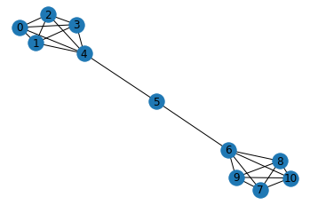
+) networkX로 만들 수 있는 기본 모양들: https://networkx.org/documentation/stable//reference/generators.html
-
triangles: 3개의 node가 모두 서로 연결된 모양
- simplest complex clique: a triangle.
- 친구 추천 시스템에서 triangle 개념 활용 가능: ex) A와 B가 친구이고 A와 C가 친구 → A와 C도 서로 알 가능성이 높음
## 각각의 node가 몇 개의 triangle에 속해 있는지 출력 nx.triangles(barbell_g){0: 6, 1: 6, 2: 6, 3: 6, 4: 6, 5: 0, 6: 6, 7: 6, 8: 6, 9: 6, 10: 6}## barbell_g 그래프의 6 node가 몇 개의 triangle에 속해 있는지만 출력 nx.triangles(barbell_g, 6)6 -
Maximal Cliques: 찾아지는 최대 크기의 clique.
- a clique that, when extended by one more node is no longer a clique.
- 네트워크 안의 특정 community를 찾는 데에 응용될 수 있다: Cliques form a good starting point for finding communities, as they are fully connected subgraphs within a larger graph.
# 각각 maximal clique을 이루고 있는 node들의 list를 출력 list(nx.find_cliques(barbell_g))[[4, 0, 1, 2, 3], [4, 5], [6, 5], [6, 7, 8, 9, 10]]## 특정 node 6이 속한 clique들을 모두 출력 nx.cliques_containing_node(barbell_g, 6)[[6, 5], [6, 7, 8, 9, 10]]
Subgraphs
: 큰 group에서 일부를 떼어서 Subgraph로 그려보는 것이 유용할 때가 있다
(특정 node 사이의 path, communties / cliques, degree of seperation 등을 파악하기 용이)
# 예시로 Erdős-Rényi graph를 만들어 사용
G = nx.erdos_renyi_graph(n=20, p=0.2)
plt.axis('off') # turn off axis
plt.show()
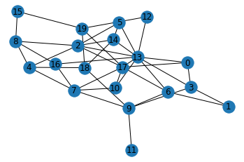
- node 8과 이와 연결된 neighbor 노드들을 추출
nodes = list(G.neighbors(8)) nodes.append(8) nodes[2, 4, 15, 16, 8] - node 8과 이와 연결된 node들로 subgraph를 구성
G_eight = G.subgraph(nodes) # subgraph를 구성할 node의 list를 G.subgraph() 함수에 넣어준다 G_eight.edges() # 넣어준 list 속 node들 사이의 edge가 반영됨EdgeView([(2, 4), (2, 8), (4, 8), (8, 15), (8, 16)])→ subgraph 시각화
nx.draw_networkx(G_eight) plt.axis('off') # turn off axis plt.show()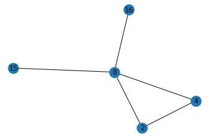
- 이렇게 특정 node와 이에 연결된 node들만으로 구성한 network를 ‘Ego Network’라고 한다
*전체 네트워크와 Ego Network
- 전체 네트워크(Whole Network): 네트워크를 구성하고 있는 모든 node와 그 사이의 관계를 모두 포함 (ex. 중세 플로랑스 지역 주요 가문들 간의 혼인 관계 네트워크)
- ego network: 특정 node의 personal network를 의미 (ex. Medici 가문의 ego network: Medici 가문과 연결된 tie만 표현)
- 특정 graph와 이의 subgraph는 동일한 type을 갖게 됨.
print(type(G)) print(type(G_eight))<class 'networkx.classes.graph.Graph'> <class 'networkx.classes.graph.Graph'>
Visualization with nxviz
*nxvis: a graph visualization package for NetworkX
# 먼저 설치해줘야 사용할 수 있다
$ conda install -c conda-forge nxviz
## conda install이 추천되지만, $ pip install nxviz로 설치해도 괜찮음
nxviz example 1
: 가장 위에서 만들어뒀던 ‘g’ 네트워크를 사용
color_map = []
for n, d in g.nodes(data=True):
if d['gender'] == 'female':
color_map.append('pink') # 여성: pink
else:
color_map.append('skyblue') # 남성: skyblue
pos=nx.spring_layout(g)
nx.draw_networkx(g, pos, node_color=color_map)
labels = nx.get_edge_attributes(g,'weight')
nx.draw_networkx_edge_labels(g, pos,edge_labels=labels)
plt.axis('off') # turn off axis
plt.show()
-
Arc Plot: 한 줄로 늘어선 node 간의 연결 관계를 반원 모양 라인으로 표현
import nxviz as nv # import해서 사용 import matplotlib.pyplot as plt ap = nv.ArcPlot(g, node_color='gender', # 성별에 따라 색을 다르게 표현 edge_width='weight') # edge의 weight에 따라 선의 굵기를 다르게 표현 ap.draw()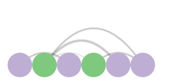
-
Circos Plot: Arc Plot의 양 끝을 circle로 결합한 모양. 동그라미 형태로 node들을 그려주고, 서로의 연결관계가 곡선으로 표현됨.
c = nv.CircosPlot(g, node_labels=True, # node label을 함께 보여줌 node_color='gender', # 성별에 따라 색을 다르게 표현 node_order='gender') # 성별에 따라 묶어서 보여줌 (순서를 조정) c.draw()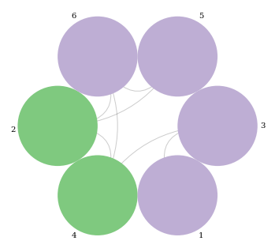
-
Matrix Plot: 각 node가 행/열에 들어가고, 서로 연결이 있는 node라면 해당 cell이 진하게 표현됨
- weight에 따라 색의 강도가 다르게 표현됨
- Directed Network라면, A→B 연결은 행:A, 열:B에 해당되는 위치에 칠해서 표현
m = nv.MatrixPlot(g) m.draw()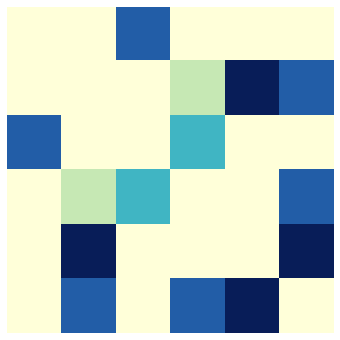
nxviz example 2: complex network
- network에 node와 edge가 많으면 많을수록, 시각화하면 hairball 같은 형태가 되어 알아보기 어렵기 때문에, 복잡한 network일수록 nxviz로 시각화하면 더 깔끔하게 보여줄 수 있다.
# 예시로 node가 30개인 Erdős-Rényi graph를 만들어 사용
from random import choice
G = nx.erdos_renyi_graph(n=30, p=0.2)
for n, d in G.nodes(data=True):
G.nodes[n]["class"] = choice(["one", "two", "three"])
→ 평범한 시각화
color_map = []
for n, d in G.nodes(data=True):
if d['class'] == 'one':
color_map.append('pink')
elif d['class'] == 'two':
color_map.append('skyblue')
else:
color_map.append('lightgrey')
nx.draw_networkx(G, node_color=color_map)
plt.axis('off') # turn off axis
plt.show()
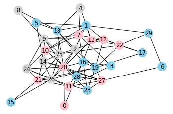
- Arc Plot
ap = nv.ArcPlot(G, node_color="class", node_order='class') ap.draw()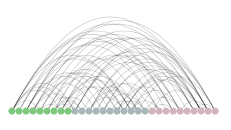
- Circos Plot
c = nv.CircosPlot(G, node_labels=True, node_color="class", node_order="class") c.draw()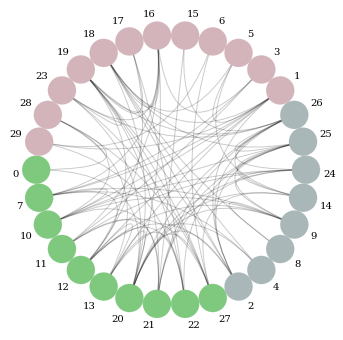
-
Matrix Plot
# 예시로 Lollipop Graph를 그려서 사용
import numpy.random as npr lp_G = nx.lollipop_graph(m=10, n=4) nx.draw_networkx(lp_G) plt.axis('off') # turn off axis plt.show()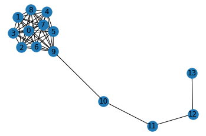
→ Matrix Plot으로 표현
m = nv.MatrixPlot(G) m.cmap = plt.cm.get_cmap("Greens") # colormap을 Green으로 지정 m.draw()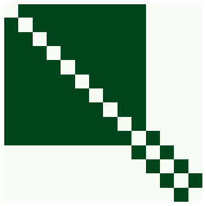